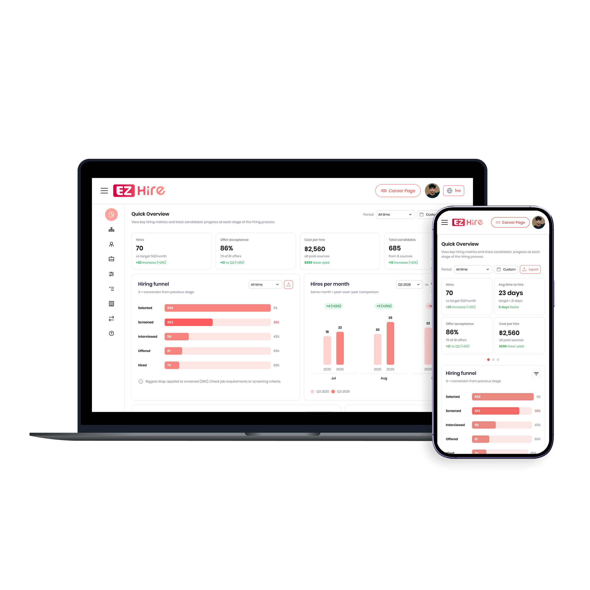
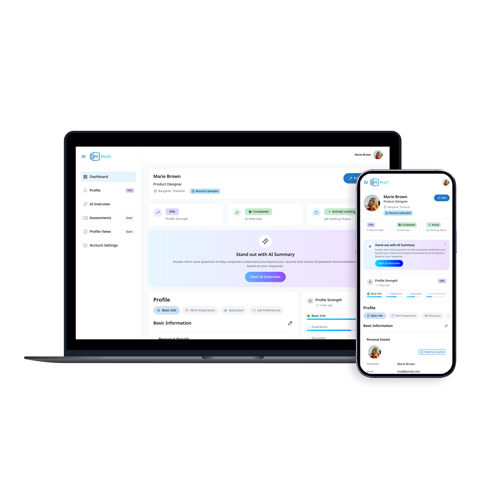
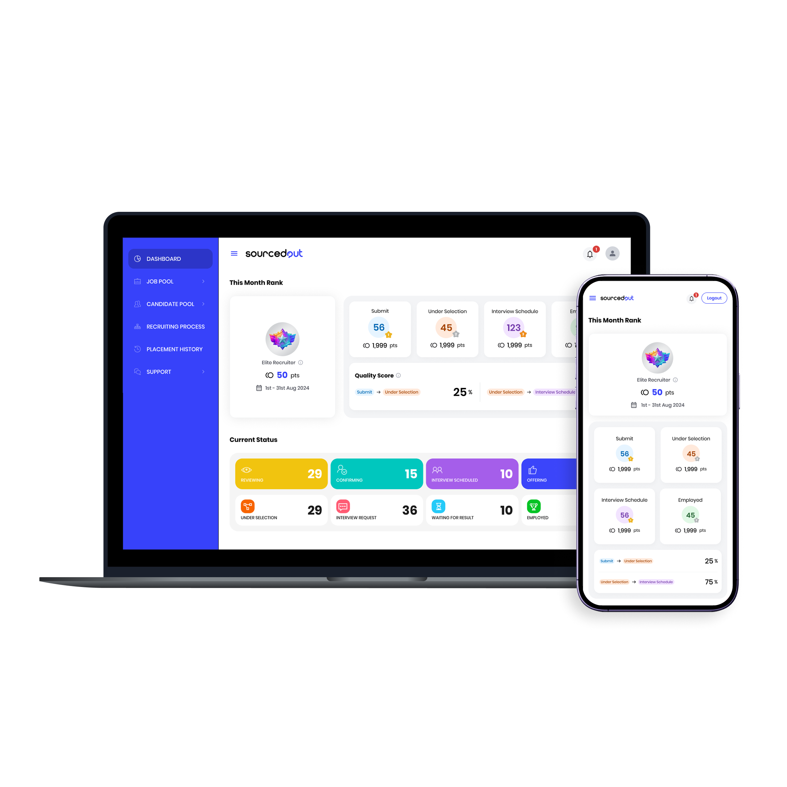
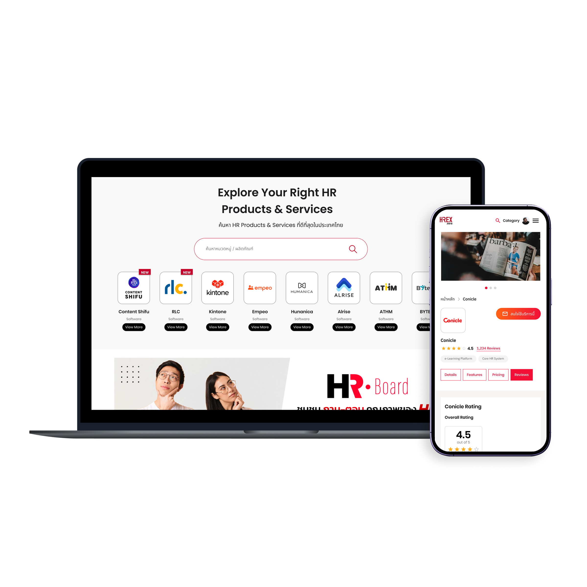
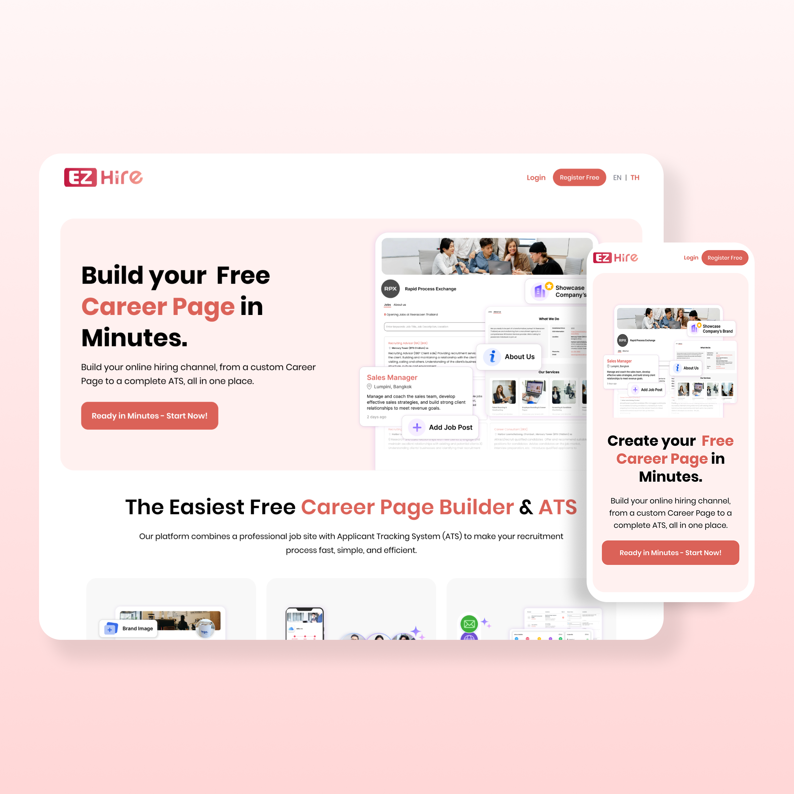
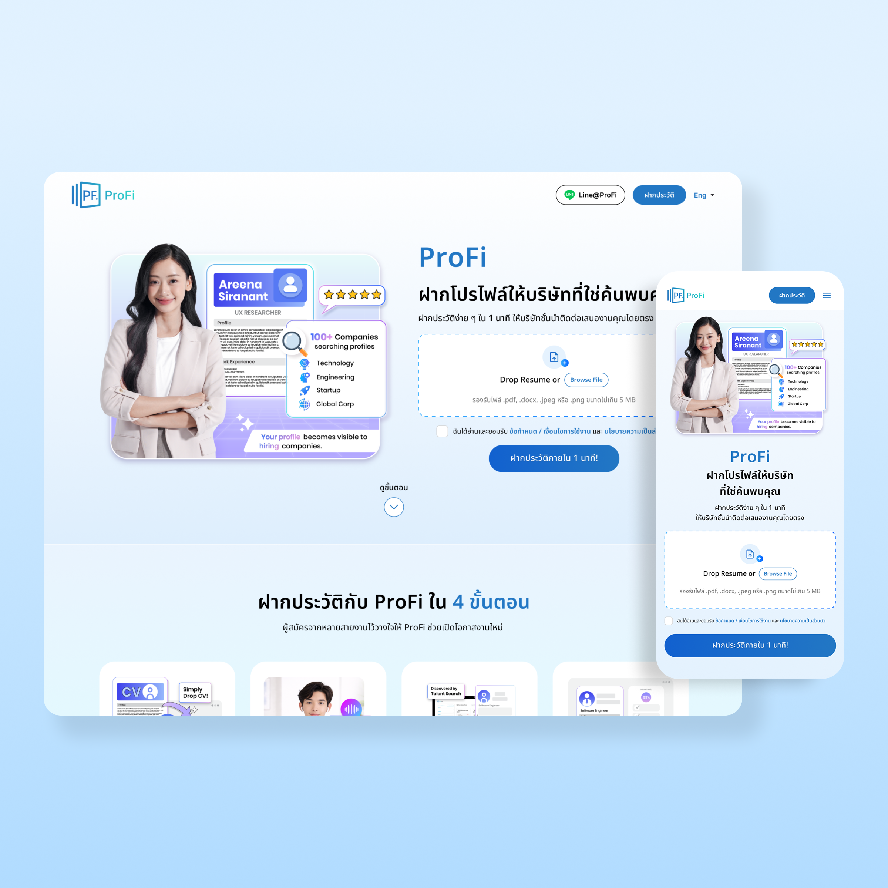
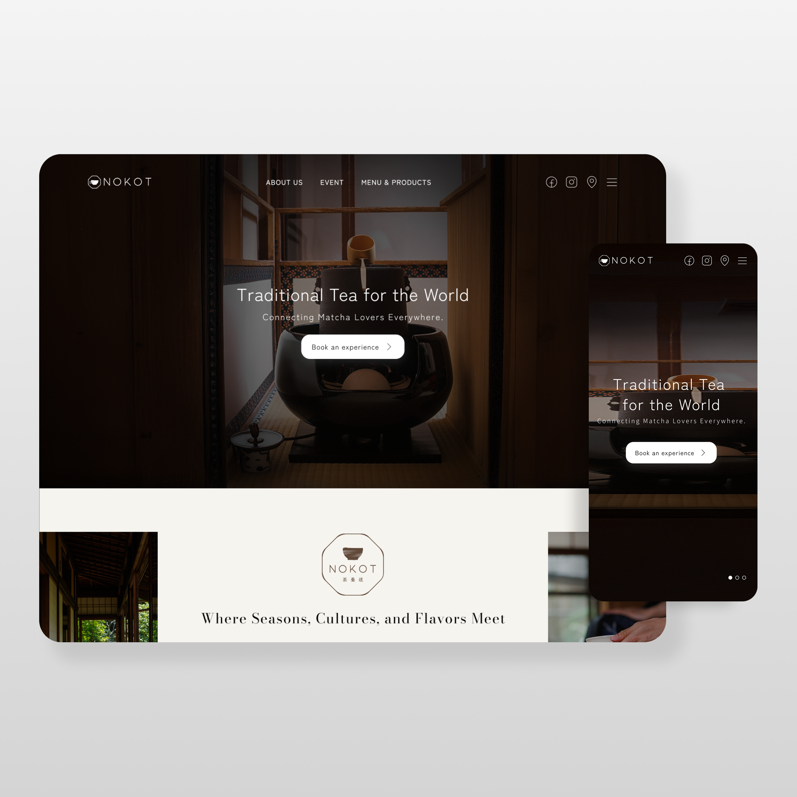
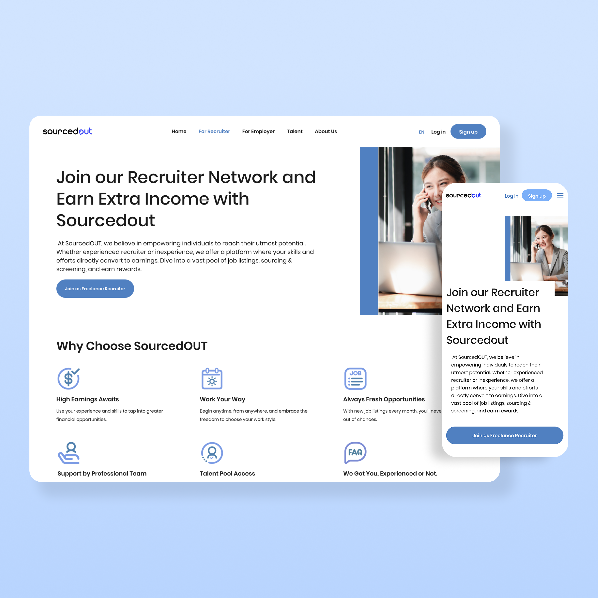

Featured case study
EZHire
An ATS and Career Page platform that helps recruiting teams publish jobs, manage candidates, and collaborate throughout the hiring process.
Open case studyI'm a UX/UI designer who turns complex ideas and real user needs into intuitive digital experiences that make everyday tasks simpler and more enjoyable.

An ATS and Career Page platform that helps recruiting teams publish jobs, manage candidates, and collaborate throughout the hiring process.
Open case study
A candidate profile platform that helps professionals manage their career details and preferences, then get discovered by companies through ProFinder.
Open case study
A recruiter sourcing platform that helps freelance recruiters discover suitable roles, recommend qualified candidates, and track each placement with confidence.
Open case study
An HR content, community, and solution-discovery website that helps professionals find practical insights, exchange knowledge, and compare HR services.
Open case study
A focused recruitment landing page that introduces EZHire’s core benefits and guides hiring teams toward the platform.
Explore project
A responsive talent marketplace landing page that helps professionals upload a résumé once and be discovered by verified companies.
Explore project
A responsive café landing page that introduces Nokot’s Japanese matcha experience and guides visitors to its Ekkamai location.
Explore project
A responsive recruitment marketplace website that guides freelance recruiters, employers, and job seekers toward the right next step.
Explore project